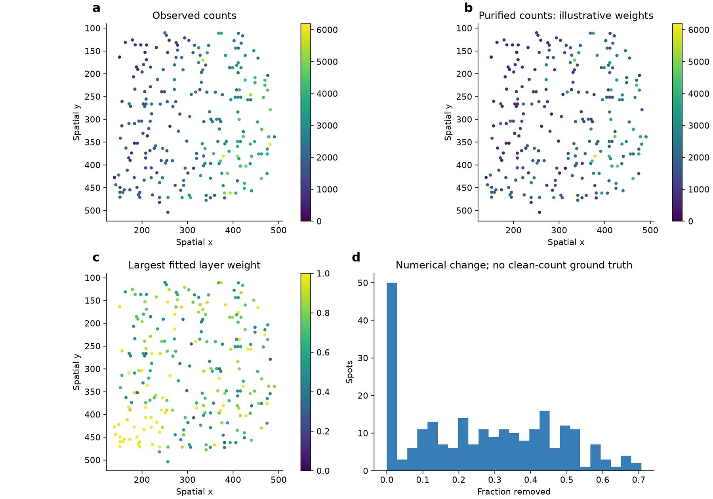
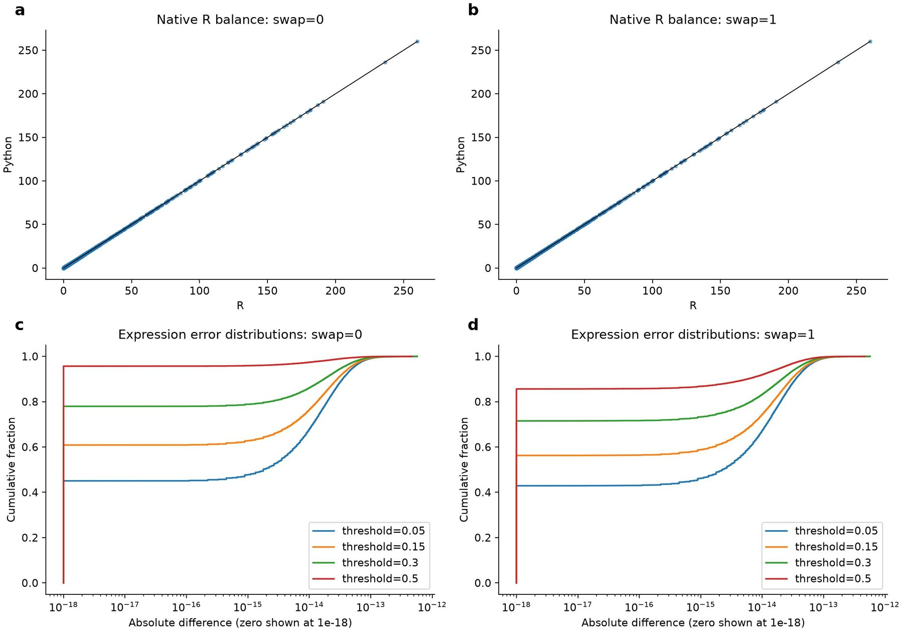
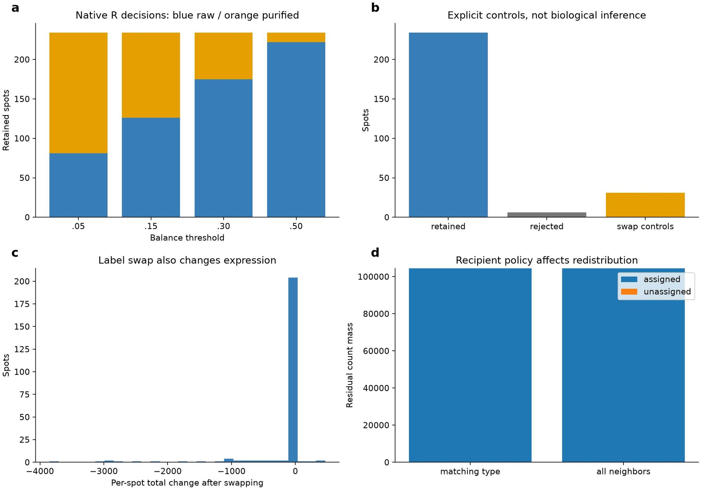

SPLIT purification and residual redistribution on real spatial counts
Affiliations
- 1 School of the First Clinical Medical Sciences, Wenzhou Medical University, Wenzhou 325000, China
- 2 Department of Genetics, Stanford University, Stanford, CA 94305, USA
- 3 OmicVerse, Inc., San Francisco, CA 94114, USA
OmicVerse Technical Reports (2026)Cite this article
Download PDFAbstract
We evaluate selected SPLIT operations on real DLPFC counts with explicitly constructed layer references. Original R neighborhood scoring and Seurat balancing are executed at four thresholds, with and without label exchange. The experiments expose and repair missing expression substitution during label swapping, missing-class comparisons and single-type status propagation. After repair, aligned retained-cell expression differs by at most 5.68e-13, with matching scores and decisions. Rejected-row representation and the absence of independent clean-expression truth remain explicit limitations.
- Python
- R
- reproducibility
- validation
Introduction
Spatial expression measurements can contain contributions from more than one cell type. A purification workflow must decide both how much expression to retain in a cell and where an excluded contribution might have originated. SPLIT combines reference profiles, deconvolution weights and neighborhood information to address these operations, including selective purification, label exchange and residual reassignment1. Porting only the arithmetic expression for purification is therefore insufficient to reproduce the workflow: metadata decisions affect subsequent matrix operations.
splitst provides an AnnData-oriented implementation of selected SPLIT operations. It accepts generic weights and reference profiles rather than requiring RCTD or Seurat objects. This report examines those interfaces against the original R source, extends earlier conditional kernel comparisons to native R neighborhood and balancing functions, and documents repairs discovered during that comparison. It distinguishes numerical fidelity from biological accuracy. The real counts used here have no independent clean-expression truth, and their fitted reference weights do not establish decontamination quality.
Implementation
Purification model
Let X be the cells-by-genes count matrix, W the cells-by-types weight matrix and R the types-by-genes reference. Weight rows are normalized. If p(i) denotes a cell's primary type, purification multiplies each observed count by the ratio between its primary-type contribution and total predicted expression. A small epsilon protects the denominator; the numerator receives epsilon divided by the number of nonzero weights. This convention follows the pinned R source rather than an independently chosen pseudocount.
Input identifiers are aligned before calculation. The Python implementation uses chunked calculations and preserves sparse output when supplied sparse counts. Primary labels can be provided or inferred from the maximum weight. The number of contributing types determines the initial purification status; selecting a profile later does not mean that a single-type cell has acquired a nonzero residual.
Neighborhood scoring and selective balance
A spatial neighborhood supplies primary and secondary type support. For each focal cell, the composition calculation excludes the focal observation, accumulates neighboring type weights and normalizes their total. The secondary-type component is the score used here. We compare the Python score with original R neighborhood functions using the same neighbor-index matrix. Sharing the graph isolates score and decision semantics, but does not validate equivalence of independently constructed graphs or tie handling.
The balanced result retains raw counts below the score threshold and uses the purified profile above it; doublet_uncertain can force selection. Rejected observations require an explicit object-model distinction: the R Seurat workflow removes them, while the Python AnnData workflow preserves rows with zero profiles and a removed status. For numerical comparison we align the retained R cells by identifiers and check rejected Python rows separately. This behavior is intentional and must not be described as identical object shape.
Label exchange and residual reassignment
Original SPLIT-shift exchanges both labels and their weights. For a swapped cell previously classified as purified, it also replaces the selected expression profile with nonnegative raw-minus-purified counts. Reviewing the R implementation exposed that Python had previously swapped labels without replacing the profile. This repair updates the matrix as well as metadata. Missing class labels are no longer converted to equal strings that falsely trigger a swap; a raw single-type status is also preserved when its profile is selected during balancing.
Positive residual counts are redistributed by a sparse operator. Eligible receivers have a primary type matching the sender's secondary type; rejected receivers are excluded when the status is available. Weights may be uniform or proportional to receiver total counts, with optional self-retention. The former Python-only all-neighbor rule remains available explicitly as receiver_policy='all'. Changing that policy changes the recipient set and potentially unassigned residual mass, so it cannot be a hidden implementation detail.
Data and comparison protocol
The case uses 240 retained spots and 512 genes from DLPFC section 151673. Counts and coordinates are observed; layer annotations come from the source dataset. Within-slice layer means form reference profiles, and nonnegative least squares fits mixture weights. These inputs make the numerical example reproducible but are not independent cell-type references, RCTD outputs or known contamination fractions. A lower total count after purification is not, by itself, evidence of better biology.
The original R functions are pinned to bdsc-tds/SPLIT@f226987f0fecf2847646bda50a64886e0ea432a9. Native R purification, neighborhood composition, secondary-type scoring and Seurat balance functions are executed. The neighborhood graph is shared with Python. Four thresholds, 0.05, 0.15, 0.30 and 0.50, are evaluated both with and without label exchange. The eight conditions test threshold and swap semantics; they are not eight independent biological datasets.
Six observations are marked as rejected and a separate set as uncertain doublets using deterministic positions in the input. Swap-support metadata are also controlled. These assignments deliberately exercise branches and are not inferred cell classifications. R removes six rejected cells, leaving 234 for aligned expression comparison. The controlled swap setting yields 31 swaps in Python, with retained-cell decisions matching R after the repairs.

Results
Native R scoring and balancing
The maximum secondary-type score difference was 5.55e-16. Across all eight threshold/swap conditions, retained-cell expression differed by at most 5.68e-13. Swap flags and purification statuses had zero disagreements on aligned retained cells after repair. Expression errors remain at floating-point scale even when swapped profiles use the residual rather than the original purified matrix.
The experiment detected errors that a simple purification scatter would miss. Previously, four controlled missing-class cases produced incorrect swap flags, and one single-type case received an incorrect purification status. The missing-class issue did not necessarily create a large expression difference because a raw cell can have no residual, illustrating why both metadata and numerical outputs must be tested. The profile-replacement error was corrected directly from the original R behavior and protected by a dedicated regression test.
| Quantity | Result | Interpretation |
|---|---|---|
| Threshold/swap conditions | 8 | Four thresholds, two swap settings |
| Maximum score difference | 5.55e-16 | Original R neighborhood functions |
| Maximum expression difference | 5.68e-13 | Retained cells aligned by identifier |
| Swap disagreements | 0 | After missing-class repair |
| Status disagreements | 0 | After single-type status repair |
| R / Python stored observations | 234 / 240 | Explicit reject-row representation difference |

Decisions and recipient policy
Increasing the threshold changes how many retained observations use the purified profile. This is a method parameter, not numerical noise. Likewise, swap controls change expression totals because the residual is a different profile. The case demonstrates both behaviors without assuming that one threshold or swapped label is biologically optimal. Threshold selection for a real study requires an external rationale or validation criterion.
Residual accounting separates assigned from unassigned mass. A sender without a matching receiver cannot be treated as if its residual had been assigned successfully. The all-neighbor alternative can redistribute more mass while violating the intended type restriction; this is why conservation alone is insufficient to establish the correct receiver rule. The earlier direct R redistribution comparison remains valid for its shared decisions and operator inputs, but is not promoted to an independent full spatial-workflow benchmark.

Interpretation and limitations
The combined evidence supports selected formula, score, balance and shift behavior under a shared graph and explicit object mapping. It is materially stronger than the original synthetic-only tests, but still does not validate arbitrary RCTD objects, independently built neighborhoods, every class hierarchy or biological purification accuracy. The 240-spot case is one subset of one section. No uncertainty interval across tissues is inferred from the eight parameter settings.
The object-model difference for rejected cells is particularly relevant downstream. A consumer that treats a zeroed removed row as an ordinary cell can distort neighborhood or summary statistics. Consumers should inspect split_balance_status, exclude removed observations where required and avoid assuming that AnnData dimensions match a Seurat return value. The report therefore describes mapping rules rather than presenting a blanket same-object claim.
These experiments do not establish a speed advantage. The implementation is vectorized and sparse-aware, but matched repeated runtime and memory profiling over realistic sizes remains future work. The scientific conclusion is that exact branching semantics matter: labels, statuses and expression profiles must remain synchronized. A release should ship the new regression cases and maintain the same repairs in the embedded OmicVerse copy.
Data and code availability
The reproduction bundle contains the recorded inputs, reference outputs, scripts and environment details.
The evaluated Python implementation is preserved at the pinned repair revision. The benchmark source hashes identify the exact tested files; inclusion in an upstream release is a separate status.
Original SPLIT source is available at https://github.com/bdsc-tds/SPLIT and the Python package at https://github.com/omicverse/py-SPLIT. This report documents the evaluated source revision. The experiment bundle includes spatial_reference.R, spatial_compare.py, shared CSV inputs, native R metadata and expression outputs, per-condition comparisons and figures.py. The initial fixture records the source count-matrix SHA-256. Input subset selection and fitted-weight construction are preserved in prepare_spatial.py; their constructed nature is essential to interpretation, not optional provenance.
Conflicts of interest
H.Z. and Z.Z. are affiliated with OmicVerse, Inc.
Use of AI tools
AI assistance was used for code inspection, experiment scripting, visualization and drafting. The authors approved submission of this scoped technical report.
References
- 1.Bilous M et al. (2026). Resolving sensitivity, specificity and signal contamination in Xenium spatial transcriptomics. Nature Methods. 10.1038/s41592-026-03089-8
- 2.Maynard KR et al. (2021). Transcriptome-scale spatial gene expression in the human dorsolateral prefrontal cortex. Nature Neuroscience 24, 425–436. 10.1038/s41593-020-00787-0
- 3.Virtanen P et al. (2020). SciPy 1.0: fundamental algorithms for scientific computing in Python. Nature Methods 17, 261–272. 10.1038/s41592-019-0686-2
- 4.Zeng Z et al. (2024). OmicVerse: a framework for bridging and deepening insights across bulk and single-cell sequencing. Nature Communications 15, 5983. 10.1038/s41467-024-50194-3
Supplementary information
Reproduction and acceptance criteria
Generate the real-count subset and fitted reference inputs, execute the R source functions with the exported neighbor indices, and run Python on the same matrices. Compare by cell and gene identifiers, not row positions. Check score error, matrix error, swap flags and purification status separately. For rejected observations, verify zeroed Python rows and removal from R before aligning retained cells. Record the precise source commit and R session information.
The new focused regression fixture contains a swapped purified profile, a raw single-type profile with missing class labels, and a rejected profile. It verifies residual substitution, lack of a missing-value-induced swap, status preservation and zeroed rejection. Existing tests were updated where they encoded the previous behavior of marking every selected profile as purified; this change follows independently executed R semantics rather than weakening a numerical tolerance.
Author information
Affiliations
- 1 School of the First Clinical Medical Sciences, Wenzhou Medical University, Wenzhou 325000, China
- 2 Department of Genetics, Stanford University, Stanford, CA 94305, USA
- 3 OmicVerse, Inc., San Francisco, CA 94114, USA
Corresponding authors
Correspondence to Zehua Zeng.
Cite this article
Zhu, H. & Zeng, Z. SPLIT purification and residual redistribution on real spatial counts. OmicVerse Technical Reports (2026). https://omicverse.org/articles/splitst
@techreport{zhu2026splitst,
title = {SPLIT purification and residual redistribution on real spatial counts},
author = {Zhu, Haoliang and Zeng, Zehua},
institution = {OmicVerse},
type = {Technical Report},
year = {2026},
url = {https://omicverse.org/articles/splitst}
}